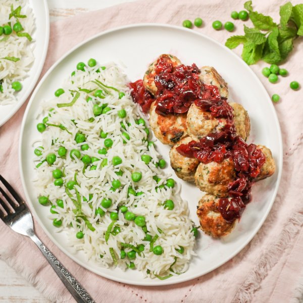

Turkey Meatballs with Cherry Sauce & Sweet Pea-Mint Rice Pilaf

Total Time
40 min
Nutrition (per serving)
684.8 kcalCalories
46 gProtein
73.3 gCarbs
23.7 gFat
Full nutrition table
| Calories | 684.8 kcal |
| Total fat | 23.7 g |
| Saturated fat | 5.5 g |
| Trans fat | 0.2 g |
| Cholesterol | 199.2 mg |
| Sodium | 284.3 mg |
| Carbohydrates | 73.3 g |
| Fiber | 7.2 g |
| Sugars | 19.4 g |
| Protein | 46 g |
| Potassium | 801.5 mg |
| Calcium | 126.5 mg |
| Iron | 7.6 mg |
| Vitamin A | 1271.5 IU |
| Vitamin C | 16 mg |
| Vitamin D | 41.9 IU |
Cookware
Ingredients
- 1 cupbasmati rice
- 2eggs
- 1 small pkgfresh mint
- 3 cupsfrozen cherries
- 2 cupsfrozen peas
- 2 clovesgarlic
- 1 ½ lbground turkey
- black pepper
- cinnamon, ground
- extra virgin olive oil
- honey
- panko bread crumbs
- parsley flakes
- rosemary, dried
- sage, dried
- salt
Steps
- Using a strainer or colander, rinse the rice under cold, running water, then drain and transfer to a medium saucepan. Add water and salt; bring the mixture to a boil over high heat.1 cup basmati rice
2 cup water
½ tsp salt - Once the liquid comes to a boil, stir the mixture, cover the saucepan, and reduce heat to low. Cook rice until liquid is fully absorbed, 15-18 minutes. Once done, remove rice from the heat and let it stand, still covered, for 5 minutes.
- Wash, dry, and pick mint leaves off the stems; discard stems and mince the leaves. Place half in a medium bowl. (Reserve remaining mint for the rice.)1 small pkg fresh mint
- Peel and mince garlic; add to the bowl with the mint along with turkey, eggs, bread crumbs, and spices. Using your hands, mix well to combine.2 cloves garlic
1 ½ lb ground turkey
2 eggs
⅔ cup panko bread crumbs
2 tsp parsley flakes
1 tsp sage, dried
1 tsp cinnamon, ground
1 tsp salt
½ tsp black pepper - Using a tablespoon measure, form the turkey mixture into rounded meatballs and place on a plate.
- Preheat a large skillet over medium-high heat.
- Once the skillet is hot, add oil and swirl to coat the bottom. Working in batches if necessary, add meatballs and cook, turning occasionally, until browned on all sides and cooked through, 6-8 minutes. Once done, transfer to a clean plate (leaving cooking juices in the skillet) and cover with foil.2 tbsp extra virgin olive oil
- Meanwhile, place cherries in a colander and rinse under hot water (from the tap) to thaw; transfer to a cutting board and roughly chop.3 cup frozen cherries
- Return skillet (with cooking juices) to medium-high heat; add cherries, water, honey, and spices. Stir to combine and bring to a simmer; reduce heat to medium-low and cook, stirring occasionally, until the sauce has thickened slightly, about 5 minutes.½ cup water
1 tbsp honey
½ tsp rosemary, dried
½ tsp salt
½ tsp black pepper - Return meatballs to the skillet and continue to cook, turning occasionally, until warmed through, about 3 minutes. Remove from heat.
- Place peas in the colander and rinse under hot water (from the tap) to thaw; set aside to drain.2 cups frozen peas
- Once the rice is done, add peas and reserved mint; gently stir to combine the rice pilaf.
- To serve, divide rice pilaf, meatballs, and cherry sauce between plates. Enjoy!